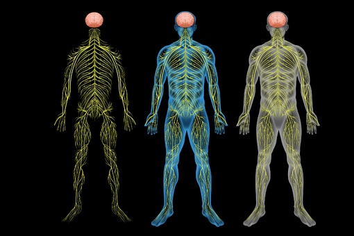
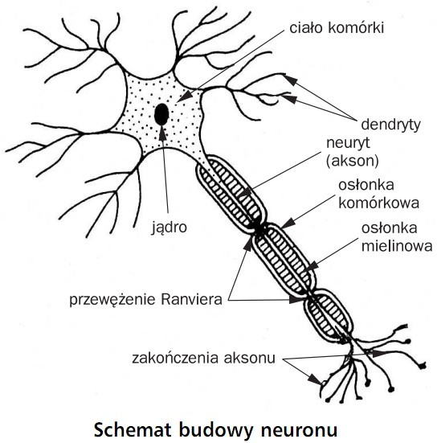

Układ nerwowy jest jednym z najważniejszych systemów w organizmie
człowieka, odpowiedzialnym za odbiór, przetwarzanie i przekazywanie
informacji. Dzieli się on na
ośrodkowy układ nerwowy (OUN) oraz
obwodowy układ nerwowy (OUN), które wspólnie
umożliwiają kontrolowanie i koordynowanie wszystkich funkcji
życiowych.
Ośrodkowy układ nerwowy (OUN)
Ośrodkowy układ nerwowy obejmuje mózg i
rdzeń kręgowy. Jest to centrum dowodzenia całego
organizmu, odpowiedzialne za przetwarzanie bodźców sensorycznych,
generowanie odpowiedzi ruchowych, kontrolę emocji, myślenie,
pamięć oraz uczenie się.
Mózg – najbardziej złożony organ ludzkiego
ciała, składający się z miliardów neuronów połączonych w
skomplikowane sieci. Odpowiada za myślenie, percepcję, emocje i
koordynację ruchową.
Rdzeń kręgowy – działa jako główny kanał
komunikacyjny między mózgiem a resztą ciała. Przekazuje impulsy
nerwowe i pośredniczy w odruchach, takich jak reakcje obronne
przed bólem.
Obwodowy układ nerwowy (PUN)
Obwodowy układ nerwowy składa się z
nerwów obwodowych, które rozchodzą się po całym
ciele i łączą narządy oraz mięśnie z mózgiem i rdzeniem kręgowym.
Układ ten dzieli się na:
Somatyczny układ nerwowy - kontroluje ruchy
świadome oraz przekazywanie informacji zmysłowych (dotyk, ból,
temperatura).
Autonomiczny układ nerwowy - reguluje procesy
niezależne od naszej woli, takie jak bicie serca, trawienie czy
oddychanie. Dzieli się on na:
Układ współczulny - aktywuje organizm w
sytuacjach stresowych, zwiększając tętno i przygotowując
ciało do działania.
Układ przywspółczulny - działa relaksująco,
zwalniając tętno i wspomagając trawienie.

Struktura ludzkiego układu nerwowego
Budowa Neuronu
Neurony – podstawowe jednostki układu nerwowego
Neurony to podstawowe komórki układu nerwowego,
odpowiedzialne za przekazywanie sygnałów między różnymi częściami
organizmu. Są niezwykle wyspecjalizowane – potrafią generować i
przewodzić impulsy elektryczne, co umożliwia błyskawiczną wymianę
informacji między mózgiem, rdzeniem kręgowym i narządami wewnętrznymi.
Przekazywanie informacji w neuronie zachodzi w postaci impulsu
nerwowego, czyli krótkotrwałej zmiany napięcia elektrycznego na błonie
komórkowej. Sygnał ten może przechodzić z jednej komórki do drugiej za
pomocą synaps – specjalnych połączeń między neuronami, w których
sygnał jest przekazywany chemicznie lub elektrycznie.
Podstawowa budowa neuronu
Każdy neuron składa się z trzech głównych części, z których każda
pełni unikalną rolę w odbieraniu, przetwarzaniu i przekazywaniu
informacji:
Ciało komórkowe (soma): To centralna część
neuronu, w której znajduje się jądro komórkowe zawierające
materiał genetyczny (DNA). Soma pełni kluczową rolę w syntezie
białek oraz produkcji energii niezbędnej do prawidłowego
funkcjonowania neuronu. Znajdują się tu także liczne organelle,
takie jak mitochondria, aparat Golgiego i rybosomy, które
wspierają jego aktywność.
Dendryty: Są to liczne, krótkie i rozgałęzione
wypustki, które odbierają sygnały z innych neuronów lub komórek
czuciowych. Dzięki obecności receptorów błonowych dendryty mogą
wychwytywać neuroprzekaźniki i przekazywać informację do ciała
komórkowego. Im więcej dendrytów posiada neuron, tym większa jest
jego zdolność do przetwarzania sygnałów.
Akson: To pojedyncza, długa wypustka przewodząca
impulsy nerwowe od ciała komórkowego do innych neuronów, mięśni
lub gruczołów. Akson może mieć długość od kilku mikrometrów do
nawet jednego metra (np. w komórkach ruchowych rdzenia kręgowego
unerwiających mięśnie nóg). W niektórych neuronach akson jest
pokryty osłonką mielinową, która przyspiesza przewodzenie impulsów
elektrycznych i zapobiega ich utracie.

Schemat budowy neuronu
Osłonka mielinowa i przewodzenie impulsów
Wiele aksonów jest otoczonych osłonką mielinową,
która jest warstwą tłuszczową tworzoną przez komórki glejowe, takie
jak oligodendrocyty (w ośrodkowym układzie nerwowym) i komórki
Schwanna (w obwodowym układzie nerwowym). Osłonka mielinowa działa jak
izolacja, która przyspiesza przewodzenie impulsów nerwowych poprzez
mechanizm skokowy – impulsy przeskakują pomiędzy przerwami w mielinie
zwanymi przewężeniami Ranviera. Dzięki temu sygnały nerwowe są
przesyłane znacznie szybciej, osiągając prędkości nawet do 120 m/s.
Synapsy – połączenia między neuronami
Neurony nie działają samodzielnie, lecz tworzą ogromne sieci
komunikacyjne. Połączenia między nimi nazywane są
synapsami. Wyróżniamy dwa główne rodzaje synaps:
Synapsy chemiczne: W tych połączeniach impuls
nerwowy przekształcany jest w sygnał chemiczny. Neuroprzekaźniki
(np. dopamina, serotonina, acetylocholina) uwalniane z zakończenia
aksonu przechodzą przez szczelinę synaptyczną i wiążą się z
receptorami na dendrytach kolejnego neuronu, wywołując impuls
nerwowy.
Synapsy elektryczne: W tych połączeniach impuls
nerwowy przekazywany jest bezpośrednio z jednej komórki do drugiej
poprzez połączenia szczelinowe (gap junctions). Przekaz jest bardzo
szybki, ale mniej elastyczny niż w synapsach chemicznych.
Funkcje Neuronów
Neurony pełnią kluczowe role w organizmie:
Przewodzenie impulsów nerwowych: przekazują
informacje w postaci sygnałów elektrycznych.
Przetwarzanie informacji: analizują i integrują
sygnały z różnych źródeł.
Kontrola funkcji organizmu: regulują czynności
takie jak ruch, percepcja zmysłowa czy funkcje autonomiczne.
Rodzaje Neuronów
Neurony można podzielić na trzy główne typy:
Neurony czuciowe (aferentne): przekazują
informacje z receptorów zmysłowych do ośrodkowego układu
nerwowego, umożliwiając odczuwanie bodźców takich jak dotyk, ból
czy temperatura.
Neurony ruchowe (eferentne): transmitują sygnały
z ośrodkowego układu nerwowego do mięśni i gruczołów, kontrolując
ruchy i reakcje organizmu.
Interneurony (neurony pośredniczące): znajdują
się głównie w ośrodkowym układzie nerwowym i pośredniczą w
przekazywaniu sygnałów między neuronami czuciowymi a ruchowymi.
Pełnią kluczową rolę w integracji i przetwarzaniu informacji,
uczestnicząc w tworzeniu złożonych sieci neuronalnych
odpowiedzialnych za funkcje poznawcze, takie jak uczenie się,
pamięć czy podejmowanie decyzji.